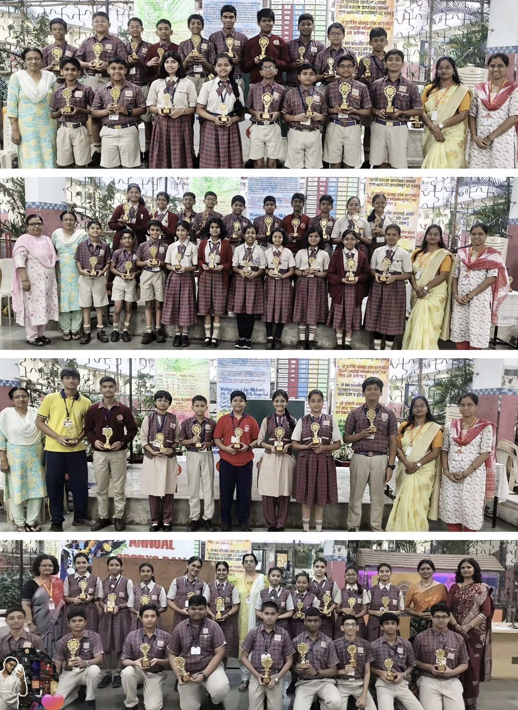

XTREAME AEROSPACE

About Us
Learn about Rupam Bose and Aayush Varkhale, students of Class 8 from DAV Public School.
Read Full Story...Mars Mission
Full research documentation on Martio City and terraforming.
View Research...A Student-Led Initiative

We are Rupam Bose and Aayush Varkhale, two passionate students from Class 8 at DAV Public School, New Panvel. What began as simple curiosity about the night sky has grown into a dedicated mission driven by research, discipline, and a deep interest in space science. Our journey truly accelerated when we participated in the Jigyaasa Science Exhibition 2025–26, where our project earned first prize. That achievement was not just a moment of celebration—it became the turning point that strengthened our commitment toward space research and future exploration. From that day forward, space was no longer just a subject we admired; it became a field we actively pursued. We began investing our free time in studying astronomy, planetary science, aerospace concepts, and future human space settlement ideas. While many students spend their leisure time on entertainment, we consciously chose to sacrifice portions of our holidays, fun activities, and even personal expenses to deepen our understanding of space technology and research. This was not out of pressure, but out of genuine passion and curiosity about humanity’s future beyond Earth. Our vision extends beyond simply learning about space—we aim to contribute meaningfully to it. Inspired by the remarkable work of global space agencies, we aspire to collaborate in the future with organizations such as NASA, ISRO, and other international space research bodies. Our long-term conceptual goal is the development of real, sustainable extraterrestrial habitats, including the proposed Lunaris City on the Moon and Martio City on Mars. Through these ideas, we hope to support the next phase of human civilization: becoming a multi-planetary species. We strongly believe that while humanity has achieved incredible technological progress on Earth, the next true game-changing step is not just moving from place to place on our planet, but uplifting human civilization from planet to planet. This vision is not driven by the desire to abandon Earth—our home will always remain our primary responsibility. In fact, we firmly support protecting and restoring Earth’s environment. However, we also recognize the importance of expanding research and development beyond our planet to ensure long-term survival, scientific advancement, and technological growth for humanity. Our work so far has involved studying Mars’ atmosphere, the possibility of water presence, terraforming concepts, artificial magnetic shielding, spaceport infrastructure, and sustainable living domes for astronauts. We continuously document our ideas, refine our models, and learn from existing scientific research. We understand that many of these goals are long-term and complex, but every major achievement in history began with students, thinkers, and dreamers who were willing to ask bold questions and work consistently toward answers. What defines our initiative is not just imagination, but continuous effort. We believe in disciplined research, step-by-step learning, and practical thinking. Every concept we study—whether it is the Mars water cycle, atmospheric generation, or space habitat design—is approached with the mindset of future engineers and researchers. We are still at the beginning of our journey, but our commitment remains strong and focused. Through this platform, we aim to share our research notes, concepts, and learning progress with fellow students, educators, and space enthusiasts. We hope our work inspires other young minds to explore science deeply and think beyond conventional boundaries. The future of space exploration will belong to the next generation, and we are determined to prepare ourselves to be part of that future. Kindly support us in our journey, and we value your precious time for visiting us. Thanks.
Mars Mission: Exploring the Red Planet
Mars mission description: Our Mars Mission initiative is a bold, student-led effort driven by curiosity, disciplined research, and a deep passion for the future of human space exploration. Mars — often called the Red Planet — has fascinated scientists, engineers, and dreamers for generations because it represents the most realistic next step for humanity beyond Earth. Through this initiative, we aim to study, analyze, and simulate the key technologies, scientific principles, and mission architectures required to make sustained Mars exploration and eventual human presence a practical reality. What began as a strong interest has steadily evolved into a structured learning journey grounded in real scientific thinking. At its core, our Mars mission work is built on continuous research and evidence-based understanding. Rather than relying only on imagination, we carefully examine past and ongoing Mars missions conducted by leading space agencies. By studying rover landings, orbital insertions, propulsion systems, and surface operations, we gain insight into the immense complexity behind every successful mission. Each Mars mission represents years of planning, precise engineering, and international collaboration. Understanding this reality has helped shape our mindset: meaningful progress in space exploration comes from patience, accuracy, and deep technical knowledge. One of the most important pillars of our research is the Martian environment itself. Mars is both promising and extremely hostile. The planet has a very thin atmosphere composed mostly of carbon dioxide, surface temperatures that can drop below –100°C, frequent dust storms, and significantly higher radiation exposure compared to Earth. These conditions make long-term human survival challenging but not impossible. Through our studies, we explore how future explorers might adapt to these conditions using advanced engineering and scientific solutions. We examine atmospheric processing, thermal control systems, radiation shielding techniques, and habitat pressurization strategies that could support human life. Water availability on Mars is another major focus area. Evidence suggests that water ice exists beneath the Martian surface and at the polar caps. Extracting and utilizing this water is critical for any sustainable mission. We study concepts related to ice mining, purification systems, and water recycling loops. Water is not only essential for human survival but can also be split into hydrogen and oxygen for rocket fuel and breathable air. This idea — known as in-situ resource utilization (ISRU) — is one of the most powerful enablers of long-term Mars missions. By producing resources locally instead of transporting everything from Earth, mission costs and complexity can be significantly reduced. Energy generation is equally crucial for Mars operations. Any sustained presence on Mars will depend on reliable and redundant power systems. Our research explores multiple energy pathways, including solar farms optimized for Martian sunlight levels, advanced battery storage systems, radioisotope power systems, and small modular nuclear reactors. Mars receives less sunlight than Earth, and global dust storms can block solar radiation for weeks, so energy resilience is a major engineering challenge. Studying these limitations helps us understand why future Mars bases will likely rely on hybrid energy systems rather than a single power source. Another key dimension of our initiative is mission architecture — the complete journey from Earth to Mars and back. Human missions to Mars involve extremely precise launch windows that occur roughly every 26 months when the planets align favorably. We study transfer orbits such as the Hohmann transfer, transit durations, fuel requirements, and the complexities of entry, descent, and landing (EDL) in Mars’ thin atmosphere. Landing heavy human-class payloads on Mars is far more difficult than landing small robotic rovers, and this remains one of the biggest technical hurdles. By understanding these constraints, we develop a more realistic appreciation of the engineering breakthroughs still required. Human factors are also central to our research. A crewed Mars mission is not just an engineering challenge — it is a human endurance challenge. Astronauts would spend months in deep space exposed to microgravity, radiation, confinement, and communication delays. Once on Mars, they would operate in an isolated, extreme environment with limited real-time support from Earth. We explore psychological health considerations, crew selection factors, habitat ergonomics, and the importance of autonomy in medical and operational decision-making. Long-duration human survival requires both technological and human-centered design thinking. Surface operations on Mars present another fascinating area of study. After landing, astronauts must establish habitats, deploy power systems, begin resource extraction, and conduct scientific research — all in a harsh and dusty environment. We examine concepts such as robotic precursors that prepare landing sites before humans arrive, autonomous construction using Martian regolith, pressurized rovers for long-distance travel, and modular habitat expansion strategies. The goal of our research is to understand how an initial outpost could gradually grow into a more permanent settlement. Sustainability is a guiding theme throughout our Mars mission work. Short-term visits to Mars are scientifically valuable, but the long-term vision of humanity becoming a multi-planetary species requires self-sustaining systems. We study closed-loop life support, where air, water, and waste are continuously recycled. We also explore controlled-environment agriculture for growing food on Mars using hydroponics or aeroponics. Producing food locally reduces dependence on Earth resupply and increases mission resilience. Every sustainable system on Mars must be highly efficient, fault-tolerant, and repairable with limited resources. Our long-term conceptual vision includes what we call **Martio City** — a future self-sustaining human settlement on Mars. While we fully understand that such a development is decades away and will require global collaboration, advanced robotics, and major breakthroughs in propulsion and life support, studying its foundational requirements today helps build the right scientific mindset. Martio City represents more than a physical settlement; it symbolizes humanity’s gradual transition from single-planet dependency toward responsible multi-planet expansion. Importantly, our Mars mission initiative is not motivated by the idea of abandoning Earth. We strongly believe that Earth will always remain humanity’s primary home. However, Earth is currently facing significant environmental and resource challenges. Technologies developed for Mars — such as ultra-efficient recycling systems, precision agriculture, renewable energy optimization, and closed ecological systems — have direct applications for improving sustainability on Earth. In this sense, Mars research becomes a powerful driver of innovation that benefits life on our own planet. Our approach to this initiative is grounded in realism. We recognize that as students, we are at the very beginning of a long educational journey. Becoming contributors to real aerospace and space science efforts will require years of study in physics, mathematics, engineering, computer science, and related fields. However, every expert once started with curiosity. What matters most at this stage is building strong fundamentals, maintaining disciplined learning habits, and continuously expanding our understanding of complex systems. Through this platform, we aim to document our research journey, share our learning progress, present our conceptual designs, and inspire other students who are curious about space science. We believe that early exposure to real scientific thinking can motivate young minds to pursue meaningful careers in STEM fields. Space exploration has always been a field where bold thinking meets rigorous engineering, and we want to cultivate both aspects in our work. The Mars Mission initiative reflects persistence, teamwork, and long-term vision. Every paper we read, every system we analyze, and every simulation we attempt strengthens our foundation. Step by step, concept by concept, we are working to understand what it truly takes to extend human presence beyond Earth. The road ahead is long and challenging, but that is exactly what makes this journey meaningful. Our mission is simple in principle but ambitious in scope: to learn deeply, think critically, and prepare ourselves to contribute — even in a small way — to the future of human space exploration.
Mission Notes : Terraforming & Advanced Systems
Terraforming Chapter Date: 05/03/2026 Mars Mission This is a planned research note about Mars and the long-term possibility of transforming it into a more Earth-like world. As we know today, the Moon is the closest celestial body to Earth and an important stepping stone for space exploration. However, building permanent large-scale human settlements there presents major limitations. The Moon has no atmosphere, extremely low gravity, and almost no natural agricultural soil. Its surface is dominated by rock and fine regolith dust. While water ice may exist beneath the surface in some regions and could potentially be extracted by drilling, the process is complex, energy-intensive, and limited in scale. For long-term self-sustaining human civilization, the Moon is useful as a base, but it is not naturally suitable for large biological ecosystems. This leads scientists and researchers to consider Mars more seriously. Mars is farther away, but in many ways it is more Earth-like than the Moon. It has a day length similar to Earth, polar ice caps, seasons, and evidence of ancient flowing water. Over the past decades, multiple missions have detected chemical and geological **biosignatures** — indicators that suggest Mars may once have had conditions suitable for microbial life. While there is no confirmed discovery of living organisms on Mars today, these findings make the planet scientifically exciting and a strong candidate for future human exploration and long-term habitation. Based on our early research and learning journey, the concept of terraforming Mars — gradually transforming its environment to be more Earth-like — appears theoretically possible in the very long term, although extremely challenging with current technology. Terraforming does not mean an instant transformation; it is a multi-stage planetary engineering process that could take centuries or even millennia. However, understanding the steps involved helps us evaluate whether humanity could one day make Mars partially habitable. The first major challenge is Mars’ thin atmosphere. The atmospheric pressure on Mars is less than 1% of Earth’s, and it is composed mostly of carbon dioxide. To make Mars more hospitable, scientists propose gradually thickening the atmosphere and increasing the surface temperature. One commonly discussed concept is the release of greenhouse gases to trigger a warming effect. This could potentially be done by processing Martian soil and polar ice to release trapped CO₂, or by manufacturing powerful artificial greenhouse gases through industrial processes on Mars. As temperatures rise, additional frozen CO₂ and water ice could sublimate, creating a positive feedback loop that further thickens the atmosphere. The second key requirement is temperature stability. Mars is currently very cold, with global average temperatures around –60°C. A thicker atmosphere combined with greenhouse warming could slowly raise surface temperatures. Over long periods, this might allow liquid water to exist more stably on the surface in some regions. Liquid water is one of the most critical ingredients for any Earth-like ecosystem. Water availability is actually one of Mars’ strongest advantages compared to the Moon. Large amounts of water ice exist at the poles and beneath the surface. Future technologies could mine, melt, and redistribute this water. In early stages, water would primarily support human bases and agriculture inside controlled habitats. In extremely long-term terraforming scenarios, stable surface water bodies could potentially form if atmospheric pressure and temperature increase sufficiently. Another major component of terraforming is oxygen production. Mars’ atmosphere contains very little breathable oxygen. Initially, humans would rely on life support systems and oxygen generation technologies such as electrolysis. Over much longer timescales, scientists have proposed introducing photosynthetic microorganisms — such as specially engineered algae or cyanobacteria — that could slowly convert carbon dioxide into oxygen. However, this process would take a very long time and would require Mars to first reach warmer and more stable conditions. Radiation protection is also a serious concern. Mars lacks a strong global magnetic field, which means the surface is exposed to higher levels of cosmic and solar radiation. Early human settlements will almost certainly need underground habitats or heavily shielded domes. Some long-term theoretical ideas even propose creating artificial magnetic shielding near Mars, but this remains highly experimental and far beyond current capabilities. It is important to state clearly and scientifically that **full Earth-like terraforming of Mars is not currently achievable with today’s technology** and remains a subject of ongoing research and debate. However, partial terraforming — or “paraterraforming” through large protected domes and controlled environments — is far more realistic in the nearer future. This is likely the first practical step toward making Mars more habitable for humans. Our research journey into terraforming is still in its early stages, but it reflects a larger vision: understanding how planetary science, engineering, and sustainability come together. Studying Mars is not just about leaving Earth; it is also about learning technologies that can help protect and improve our home planet. The challenges of Mars force us to invent highly efficient life-support, recycling, and energy systems — innovations that can directly benefit Earth’s future. Terraforming Mars remains one of humanity’s most ambitious long-term scientific ideas. While the road ahead is extremely long and complex, continuous research, technological advancement, and global collaboration may gradually bring parts of this vision closer to reality. **L1 Lagrange Point Concept and Magnetic Shield Plan** There is a special region in space known as the Sun–Mars L1 Lagrange point. This is a location between the Sun and Mars where the gravitational forces of the two bodies and the orbital motion of an object balance in such a way that a spacecraft can remain in a relatively stable position with minimal fuel for station-keeping. Because of this unique balance, scientists often consider Lagrange points as useful locations for space observatories, communication relays, and future large-scale space engineering concepts. In our research concept, the L1 region is important because it could theoretically host a large-scale magnetic shielding system designed to help protect Mars. Unlike Earth, Mars does not currently have a strong global magnetic field. Earth’s magnetic field plays a crucial role in protecting the atmosphere from being gradually stripped away by the solar wind. On Mars, the absence of a strong magnetosphere has allowed much of the original atmosphere to escape into space over billions of years. Therefore, one of the long-term ideas proposed by scientists and researchers is to artificially create magnetic protection for Mars. Our conceptual approach imagines placing a set of powerful superconducting magnets near the Mars–Sun L1 point. In theory, if extremely strong magnetic fields — for example on the order of several tesla — could be generated and sustained in space, they might help deflect part of the incoming solar wind, creating a protective magnetic umbrella upstream of Mars. This idea has been discussed in theoretical studies (including some early concepts proposed in the scientific community), but it is important to understand that such a system would be extraordinarily difficult with current technology and remains speculative. If an artificial magnetic shield could be partially achieved in the far future, one potential benefit would be the gradual reduction of atmospheric loss from Mars. Over very long timescales, this could help any thickened atmosphere remain more stable. Another theoretical advantage of large electromagnetic structures in space is the possibility of harvesting solar energy, since the Sun provides an enormous and continuous power source. However, the engineering challenges of building, powering, cooling, and maintaining multi-tesla superconducting systems at planetary scale are extremely large and far beyond present-day capabilities. In the next phase of the long-term Mars development concept, attention would shift toward atmospheric and water-related processes. Mars already contains large quantities of frozen carbon dioxide and water ice, especially in the polar caps and subsurface layers. If future technologies could safely warm targeted regions, some of this ice could sublimate (turn directly into gas) and contribute to thickening the atmosphere. Before any such activity, detailed chemical analysis would be essential to ensure that no harmful compounds are released in dangerous concentrations. Water extraction would be a major priority. By carefully drilling into ice-rich regions and processing the material, future missions could obtain water for human use, fuel production, and controlled environmental systems. In early realistic scenarios, most water would be used inside sealed habitats and agricultural domes rather than being released freely into the open environment. Over extremely long timescales — and only if atmospheric pressure and temperature were significantly increased — Mars might begin to support limited natural water cycling in some regions. However, it is important to remain scientifically grounded: creating a fully Earth-like water cycle on Mars is far beyond current technology and would likely require centuries or millennia of planetary-scale engineering, if it proves possible at all. What makes this research direction exciting is not that it will happen quickly, but that it encourages deep thinking about planetary science, magnetic fields, atmospheric physics, and sustainable space engineering. Studying bold concepts helps build the knowledge and problem-solving mindset needed for the future of space exploration. This concept remains part of long-term theoretical research, but exploring it step by step strengthens our understanding of how humanity might one day responsibly expand beyond Earth while also applying these advanced technologies to help protect our home planet. **Hydrosphere Formation, Soil Preparation, and Human Readiness** If atmospheric pressure and temperature on Mars were gradually increased over long periods, one of the most important outcomes would be the stabilization of liquid water on the surface. In an advanced terraforming pathway, this could eventually lead to the formation of small ponds, lakes, flowing channels, and—under very optimistic, far-future conditions—larger standing bodies of water. The moment stable surface water exists, Mars would cross a major scientific milestone, because liquid water is the foundation of most known biological systems. However, generating liquid water alone is not enough to support life. The chemical composition of that water must also be suitable. One important factor is salinity. On Earth, natural processes such as rock weathering and mineral dissolution gradually introduce salts into oceans and lakes, helping create the chemical balance required for marine ecosystems. On Mars, if future surface water naturally acquires appropriate mineral content from interaction with Martian soil and rocks, that would be beneficial. If not, then in a controlled and highly engineered scenario, mineral balancing might be required inside localized habitats or experimental biospheres. Any such adjustment would need extremely careful scientific monitoring, because incorrect salinity levels could prevent biological growth rather than support it. Alongside water chemistry, soil preparation is a critical step for any long-term biological plan. Martian regolith is very different from fertile Earth soil. One of the major concerns is the presence of perchlorates and other chemically reactive compounds in the Martian surface material. These substances can be harmful to many forms of life and would need to be reduced or neutralized before large-scale agriculture could occur. Current scientific proposals for perchlorate removal include washing processes, chemical reduction, microbial treatment, or controlled soil processing inside protected environments. In realistic near-term scenarios, the first plant growth on Mars would almost certainly occur inside controlled agricultural modules rather than directly in open Martian soil. Scientists are already studying how specially selected or genetically adapted plants might grow in treated Martian regolith under controlled pressure, temperature, and atmospheric conditions. Over very long timescales—if atmospheric thickening and warming were significantly successful—more open or semi-open cultivation might become possible in limited regions. Plant introduction would be a major biological milestone. Plants do more than produce food; they also help regulate carbon dioxide and oxygen levels, contribute to soil development, and support broader ecosystems. However, introducing Earth life to Mars must be done with extreme scientific caution to avoid unintended planetary contamination and to ensure long-term ecological stability. If, in a far-future scenario, Mars were partially terraformed enough to support higher atmospheric pressure and improved oxygen levels, the need for full pressure spacesuits during surface activity could potentially be reduced. However, it is important to remain scientifically realistic: even optimistic terraforming models suggest that humans would likely require at least partial protective gear on Mars for a very long time. Radiation exposure, temperature variation, and atmospheric differences would remain significant challenges. Before any of these biological and environmental milestones can occur, a strong and well-planned human base on Mars is absolutely essential. Early astronauts will not arrive on a transformed planet—they will arrive on a harsh, cold, low-pressure world that requires full technological support. Therefore, the first practical step is the construction of robust Mars surface bases. These initial bases would likely include: • Pressurized living habitats • Radiation-shielded structures (possibly underground or covered with regolith) • Reliable power generation systems • Water extraction and recycling units • Oxygen production systems • Controlled agricultural modules • Surface mobility vehicles Only after stable, long-duration human presence is achieved can larger environmental engineering experiments even begin to be tested. It is also important to clarify that the terraforming pathway described here is a highly long-term and research-oriented concept. Mars today remains extremely hostile to human life, and transforming it into a fully Earth-like environment—if it proves possible at all—would require centuries of technological advancement, massive energy resources, and global cooperation. The purpose of studying these steps is not to claim immediate feasibility, but to build a structured scientific understanding of what interplanetary environmental engineering might involve. Each phase—magnetic shielding, atmospheric thickening, water stabilization, soil treatment, and biological introduction—represents a major scientific frontier. By exploring these ideas carefully and realistically, we strengthen the foundation for future generations of scientists and engineers who may one day take the next real steps toward sustainable human presence beyond Earth. **Advanced Mars Spaceport — Integrated Feature Overview** This Mars spaceport is designed as a high-efficiency, future-ready interplanetary transport hub with advanced navigation, safer landing infrastructure, and an ultra-strong operational surface engineered for the harsh Martian environment. The facility combines aerospace, energy, and automation systems to support sustained human and robotic activity on Mars. **1) Runway System** The spaceport consists of a **12,000-foot heavy-duty runway system** built using reinforced composite surface technology capable of handling high-mass spaceplanes and advanced Mars aircraft. There are two parallel runways: • **R02L** • **R03L** These dual runways enable simultaneous or staggered operations, reducing congestion and improving mission turnaround efficiency. The runway surface is engineered to resist thermal stress, dust abrasion, and high-thrust loads. Embedded structural health sensors continuously monitor surface integrity, temperature variation, and stress distribution to maintain operational safety. **2) Dedicated Rocket Launch and Landing Zone** A fully separated high-security zone is allocated specifically for rocket operations to minimize risk to runway traffic. This zone includes: • **Four vertical landing pads** designed for reusable rocket vehicles • **One vertical integration and storage hangar** The vertical hangar supports rocket assembly, refurbishment, inspection, and storage. It has a **capacity of three rockets simultaneously** and includes automated crane systems, fueling interfaces, and robotic inspection arms. Physical isolation from aircraft operations improves safety during high-energy launch and landing events. **3) Spacecraft and Aeroplane Parking Apron** The spaceport features a large, intelligently managed parking and staging apron divided into two operational sectors: • **Section A — Primary Terminal Zone:** Used for active boarding, passenger transfer, and rapid turnaround operations. This section is directly connected to the terminal through automated systems. • **Section B — Overflow and Standby Area:** Used when traffic at Section A becomes heavy. Vehicles can be temporarily staged or held here to maintain smooth ground flow and avoid congestion. The apron is reinforced to support both wheeled spaceplanes and vertical landing spacecraft. Autonomous towing units and smart ground-traffic guidance systems manage movement efficiently. **4) Passenger Terminal Complex** The terminal is designed for human comfort, automation, and Mars-environment compatibility. Key features include: • **Oxygen-enriched lounges** to support human physiology • **Automated smart jet bridges** compatible with multiple spacecraft types • **Advanced spaceport ground vehicles** for rapid servicing • **Dedicated ground staff operational zones** A **separate rear cargo complex** handles freight, scientific payloads, and logistics material. This separation improves safety and streamlines passenger flow. **5) MASTC — Mars Air Space Tower Control** The **Mars Air Space Tower Control (MASTC)** functions as the central monitoring and command hub of the spaceport. Its capabilities include: • High-precision radar and tracking • Approximate detection coverage of **15 km from surface level** • Extended **vertical and horizontal monitoring range of about 30 km** MASTC manages approach sequencing, departure clearance, surface traffic coordination, and emergency response. AI-assisted traffic management improves safety and reduces human workload in the challenging Martian flight environment. **6) STSP — Sun-Tracking Solar Panels** The **Sun-Tracking Solar Panel (STSP)** system operates on the same natural principle as a sunflower tracking the Sun. These advanced panels continuously rotate throughout the Martian day to maintain the most efficient सूर्य-facing angle. Key advantages: • Significantly higher energy output than fixed panels • Real-time solar optimization • Dust-resistant coatings • Smart actuator positioning Because Mars receives weaker sunlight than Earth, the STSP network serves as a primary renewable energy backbone for the spaceport, generating large amounts of electricity during daylight hours. **7) SWM — Spiral Wind Mill System** To complement solar generation, the spaceport includes **SWM (Spiral Wind Mills)**. These compact vertical-axis wind turbines occupy very small ground area but are designed to capture energy efficiently from Martian wind flows. Key roles of SWM: • Provides power during nighttime when solar panels are inactive • Utilizes Mars dust storms and wind streams as an energy source • Acts as a backup renewable energy system • Designed with low-density atmosphere optimization Although Mars has a thin atmosphere, high-speed winds during storms can still be harnessed with properly engineered turbine systems. The spiral design improves efficiency in turbulent flow conditions. **8) PSG — Power Saving Grid** The **Power Saving Grid (PSG)** is the intelligent energy management backbone of the entire spaceport. Its primary functions include: • Storing excess electricity generated by STSP and SWM • Balancing power distribution across all facilities • Providing emergency backup energy • Managing peak-load demand automatically The PSG integrates high-capacity battery banks and smart grid software to ensure uninterrupted power supply for critical systems such as life support, radar, runway lighting, and habitat operations. ⸻ Together, these integrated systems form a scalable and highly resilient Mars spaceport architecture. While many components remain conceptual and will require major technological advancement, this structured design demonstrates how future Mars infrastructure could combine aerospace operations, renewable energy, and intelligent automation to support long-term human presence on the Red Planet. **Chapter Two: The Living Dome** The Living Dome is designed as a fully automated, oxygenated habitation system that supports long-duration human presence on Mars. It serves as a safe, pressurized environment where astronauts can live, work, grow food, and maintain life-support operations. Because Mars has a thin atmosphere, low pressure, and high radiation exposure, the dome is engineered with advanced structural materials, smart environmental controls, and redundant safety systems. The goal of the Living Dome is to create a semi-independent habitat that can sustain crew members efficiently while minimizing reliance on constant Earth resupply. At the core of the Living Dome is its **advanced pressurization and atmospheric control system**. The dome maintains Earth-like internal pressure and breathable air composition through automated monitoring and regulation. Smart sensors continuously track oxygen levels, carbon dioxide concentration, humidity, and temperature. If any parameter drifts outside safe limits, the system automatically adjusts airflow, filtration, or gas mixing. Multiple backup layers ensure crew safety even in partial system failures. The structure itself is reinforced and partially shielded (potentially with regolith covering in future versions) to protect against radiation and micrometeoroids. **1) Agricultural Zone** A key feature of the Living Dome is the dedicated **rectangular agricultural area** designed for controlled crop cultivation. The soil bed has an engineered depth of approximately **30 cm**, which is sufficient for medium-sized plants and most small-root crops to grow effectively. The soil may consist of treated Martian regolith mixed with organic and mineral supplements to improve fertility and water retention. This farming zone supports: • Food crop production • Oxygen contribution through photosynthesis • Experimental plant species testing • Long-term sustainability research The agricultural system includes controlled lighting (supplemental grow lights), automated irrigation, humidity control, and nutrient monitoring. In early Mars missions, this area plays a critical role in reducing dependence on stored food supplies. **2) Crew Bedding and Rest Area** The Living Dome includes a dedicated **crew sleeping and rest module** with a designed capacity of **25 astronauts**. Each sleeping unit is compact but ergonomically optimized for comfort in long-duration missions. Features may include: • Individual sleep pods • Personal storage compartments • Noise and light control • Circadian rhythm lighting support Proper sleep management is extremely important for astronaut health, cognitive performance, and psychological stability during long missions. **3) Oxygen and Water Extraction Unit** One of the most technically important sections is the **oxygen and water extraction facility**. This system processes Martian resources to generate breathable oxygen and usable water. In conceptual high-temperature processing units, regolith or atmospheric CO₂ can be processed using advanced electrochemical or thermal methods. The reference to very high temperatures (hundreds of degrees Celsius) reflects processes such as solid oxide electrolysis or thermal extraction methods. These systems: • Extract oxygen for breathing • Produce hydrogen and water through chemical processing • Support fuel production in future upgrades Because this is a mission-critical system, it operates with heavy redundancy, thermal shielding, and automated fault detection. **4) Food and Water Storage Section** A separate, climate-controlled storage zone is allocated for **food supplies and drinking water reserves**. This area includes: • Long-duration food storage racks • Refrigerated compartments (if required) • Water tanks with purification monitoring • Inventory tracking systems Maintaining emergency reserves is essential even when local food production begins. **5) Clothing and Suit Maintenance Area** The Living Dome contains a dedicated **clothing and suit management section**. This multifunctional space supports: • Storage of crew garments • Spacesuit storage and inspection • Automated washing and drying units • Disinfection and sterilization systems Because Martian dust can be highly abrasive and chemically reactive, proper suit maintenance is critical for both safety and equipment longevity. **6) Pressurized Entry and Exit System** To safely move between the dome interior and the external Martian environment, the habitat includes an advanced **pressurized airlock control system**. This system manages: • Controlled depressurization and repressurization • Dust mitigation during entry • Safety interlocks • Emergency override controls The airlock is one of the most critical safety barriers in any Mars habitat. **7) Cargo Docking and Transfer Bay** The Living Dome features a **large-capacity docking area** designed for efficient cargo transfer. This bay allows supply vehicles and robotic carriers to deliver materials in bulk. The design minimizes pressure loss and enables rapid logistics flow. In many operations, cargo can be transferred through semi-isolated chambers so that the main habitat pressure remains stable. This improves operational efficiency and reduces air loss. **8) Power Generation Room** The dome includes an internal **power generator module** that utilizes available chemical resources (including carbon monoxide streams in some processing chains) along with stored energy inputs. This generator acts as a supplemental or backup power source alongside the main spaceport energy grid. Reliable internal power ensures life-support continuity during external power interruptions. **9) General Storage and Spare Parts Bay** Finally, the Living Dome contains a **general storage section** for tools, spare components, maintenance kits, and mission equipment. Long-duration missions require extensive redundancy, so organized storage and inventory tracking are essential for operational resilience. ⸻ The Living Dome represents a comprehensive habitat concept designed to support human survival, productivity, and gradual expansion on Mars. While many elements remain conceptual and will require significant technological advancement, this structured design demonstrates how integrated life-support, agriculture, energy, and logistics systems could work together to enable sustained human presence on the Red Planet. some diagrams related to this .